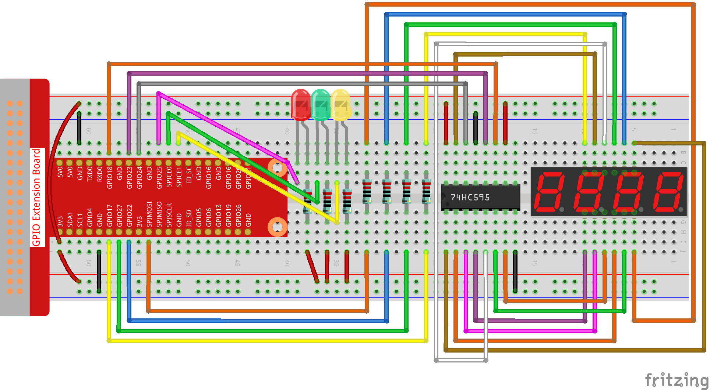

3.1.7 Ampel¶
Einführung¶
In diesem Projekt werden wir dreifarbige LED-Lichter verwenden, um den Wechsel der Ampeln zu realisieren, und eine vierstellige 7-Segment-Anzeige wird verwendet, um das Timing jedes Verkehrszustands anzuzeigen.
Komponenten¶

Schematische Darstellung¶
T-Karte Name |
physisch |
wiringPi |
BCM |
GPIO17 |
Pin 11 |
0 |
17 |
GPIO27 |
Pin 13 |
2 |
27 |
GPIO22 |
Pin 15 |
3 |
22 |
SPIMOSI |
Pin 19 |
12 |
10 |
GPIO18 |
Pin 12 |
1 |
18 |
GPIO23 |
Pin 16 |
4 |
23 |
GPIO24 |
Pin 18 |
5 |
24 |
GPIO25 |
Pin 22 |
6 |
25 |
SPICE0 |
Pin 24 |
10 |
8 |
SPICE1 |
Pin 26 |
11 |
7 |
Experimentelle Verfahren¶
Schritt 1: Bauen Sie die Schaltung auf.
{kind=link}
Für Benutzer in C-Sprache¶
Schritt 2: Verzeichnis wechseln.
cd /home/pi/davinci-kit-for-raspberry-pi/c/3.1.7/
Schritt 3: Kompilieren.
gcc 3.1.1_CountingDevice.c -lwiringPi
Schritt 4: Ausführen.
sudo ./a.out
Während die Kode ausgeführt wird, simulieren LEDs den Farbwechsel von Ampeln. Zuerst leuchtet die rote LED 60 Sekunden lang, dann leuchtet die grüne LED 30 Sekunden lang. Als nächstes leuchtet die gelbe LED 5 Sekunden lang auf. Danach leuchtet die rote LED erneut für 60s. Auf diese Weise wird diese Reihe von Aktionen wiederholt ausgeführt.
Kode Erklärung
#define SDI 5
#define RCLK 4
#define SRCLK 1
const int placePin[] = {12, 3, 2, 0};
unsigned char number[] = {0xc0, 0xf9, 0xa4, 0xb0, 0x99, 0x92, 0x82, 0xf8, 0x80, 0x90};
void pickDigit(int digit);
void hc595_shift(int8_t data);
void clearDisplay();
void display();
Diese Kode werden verwendet, um die Funktion der Nummeranzeige von 4-stelligen 7-Segment-Anzeigen zu realisieren. Weitere Informationen finden Sie in Kapitel 1.1.5 des Dokuments. Hier verwenden wir die Kode, um den Countdown der Ampelzeit anzuzeigen.
const int ledPin[]={6,10,11};
int colorState = 0;
void lightup()
{
for(int i=0;i<3;i++){
digitalWrite(ledPin[i],HIGH);
}
digitalWrite(ledPin[colorState],LOW);
}
Die Kode dienen zum Ein- und Ausschalten der LED.
int greenLight = 30;
int yellowLight = 5;
int redLight = 60;
int colorState = 0;
char *lightColor[]={"Red","Green","Yellow"};
int counter = 60;
void timer(int timer1){ //Timer function
if(timer1 == SIGALRM){
counter --;
alarm(1);
if(counter == 0){
if(colorState == 0) counter = greenLight;
if(colorState == 1) counter = yellowLight;
if(colorState == 2) counter = redLight;
colorState = (colorState+1)%3;
}
printf("counter : %d \t light color: %s \n",counter,lightColor[colorState]);
}
}
Die Kode dienen zum Ein- und Ausschalten des Timers. Weitere Informationen finden Sie in Kapitel 1.1.5. Wenn der Timer auf Null zurückkehrt, wird colorState umgeschaltet, um die LED zu wechseln, und der Timer wird einem neuen Wert zugewiesen.
void loop()
{
while(1){
display();
lightup();
}
}
int main(void)
{
//…
signal(SIGALRM,timer);
alarm(1);
loop();
return 0;
}
Der Timer wird in der Funktion main() gestartet. Verwenden Sie in der Funktion loop() die Schleife while(1) und rufen Sie die Funktionen von 4-stelligem 7-Segment und LED auf.
Für Python-Sprachbenutzer¶
Schritt 2: Verzeichnis wechseln.
cd /home/pi/davinci-kit-for-raspberry-pi/python/
Schritt 3: Ausführen.
sudo python3 3.1.7_TrafficLight.py
Während die Kode ausgeführt wird, simulieren LEDs den Farbwechsel von Ampeln. Zuerst leuchtet die rote LED 60 Sekunden lang, dann leuchtet die grüne LED 30 Sekunden lang. Als nächstes leuchtet die gelbe LED 5 Sekunden lang auf. Danach leuchtet die rote LED erneut für 60s. Auf diese Weise wird diese Reihe von Aktionen wiederholt ausgeführt. Währenddessen zeigt die 4-stellige 7-Segment-Anzeige kontinuierlich die Countdown-Zeit an.
Kode Erklärung
SDI = 24 #serial data input(DS)
RCLK = 23 #memory clock input(STCP)
SRCLK = 18 #shift register clock input(SHCP)
number = (0xc0,0xf9,0xa4,0xb0,0x99,0x92,0x82,0xf8,0x80,0x90)
placePin = (17,27,22,10)
def clearDisplay():
def hc595_shift(data):
def pickDigit(digit):
def display():
Diese Kode werden verwendet, um die Funktion der Nummeranzeige eines 4-stelligen 7-Segments zu realisieren. Weitere Informationen finden Sie in Kapitel 1.1.5 des Dokuments. Hier verwenden wir die Kode, um den Countdown der Ampelzeit anzuzeigen.
ledPin =(22,24,26)
colorState=0
def lightup():
global colorState
for i in range(0,3):
GPIO.output(ledPin[i], GPIO.HIGH)
GPIO.output(ledPin[colorState], GPIO.LOW)
Die Kode dienen zum Ein- und Ausschalten der LED.
greenLight = 30
yellowLight = 5
redLight = 60
lightColor=("Red","Green","Yellow")
colorState=0
counter = 60
timer1 = 0
def timer(): #timer function
global counter
global colorState
global timer1
timer1 = threading.Timer(1.0,timer)
timer1.start()
counter-=1
if (counter is 0):
if(colorState is 0):
counter= greenLight
if(colorState is 1):
counter=yellowLight
if (colorState is 2):
counter=redLight
colorState=(colorState+1)%3
print ("counter : %d color: %s "%(counter,lightColor[colorState]))
Die Kode dienen zum Ein- und Ausschalten des Timers. Weitere Informationen finden Sie in Kapitel 1.1.5. Wenn der Timer auf Null zurückkehrt, wird colorState umgeschaltet, um die LED zu wechseln, und der Timer wird einem neuen Wert zugewiesen.
def setup():
# ...
global timer1
timer1 = threading.Timer(1.0,timer)
timer1.start()
def loop():
while True:
display()
lightup()
def destroy(): # When "Ctrl+C" is pressed, the function is executed.
global timer1
GPIO.cleanup()
timer1.cancel() #cancel the timer
if __name__ == '__main__': # Program starting from here
setup()
try:
loop()
except KeyboardInterrupt:
destroy()
Starten Sie in der Funktion setup() den Timer. In der Funktion loop() wird eine Weile True verwendet: Rufen Sie die relativen Funktionen von 4-stelligem 7-Segment und LED kreisförmig auf.